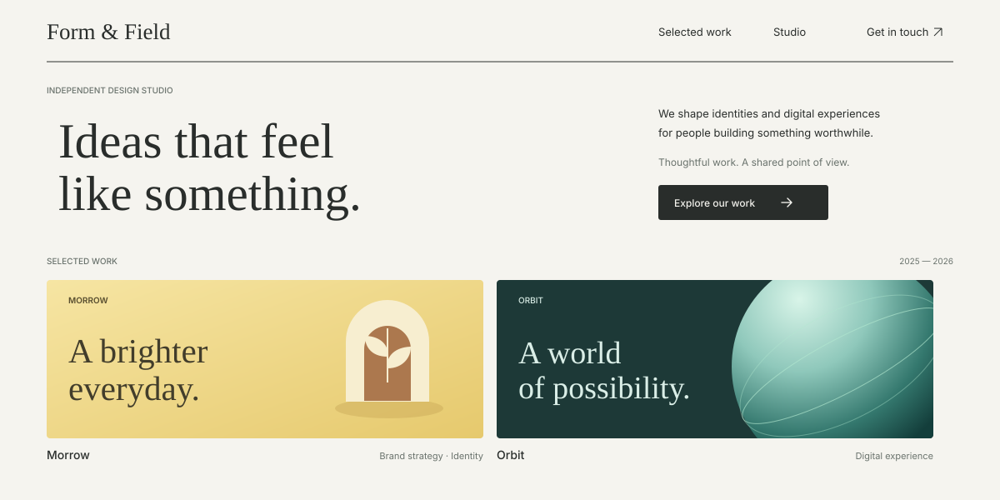

Check spacing and alignment.
Check margins and positioning against your reference.
Overlay screenshots on any app and compare pixel by pixel. Built for macOS.

Matching areas blend to gray, revealing differences in the details.
Check margins and positioning against your reference.
Keep the design over your build as you review.
Switch between designs with tabs and thumbnails.
Capture beneath Trace or paste a design reference.
Drag and nudge the overlay until the edges line up.
Invert and blend at 50% to inspect displaced edges.
Keyboard shortcuts that actually save you time.
Shortcuts for the Mac app.
The Complete Keyboard ReferenceScreenshots stay on your Mac. No account required.
Images last for the session. Preferences are saved.
Read the Privacy PolicyTrace is free on the Mac App Store and requires macOS 26 or later.
Trace for Mac floats above other apps, captures beneath its window, and supports tabs and click-through locking.
Yes. Copy your design as an image and paste it into Trace. There is no direct Figma integration.
No. Trace keeps screenshots on your Mac. Images in this browser demo are cleared on reload.
Yes. Press Control–Command–L to lock the overlay. Activate Trace again to unlock it.
Yes. Keep references in tabs, browse thumbnails, or open another window.
Image translucence toggles between 50% and opaque. Window opacity adjusts the whole window. Matching areas turn gray with 50% translucence and 100% window opacity.
Screenshots and undo history last for the session. Copy images out to keep them. Preferences and window positions persist.
macOS requires it to capture beneath Trace. You can also paste an image from the clipboard.
No. Trace helps you inspect differences visually; it does not generate automated reports.
Free. Requires macOS 26 or later.